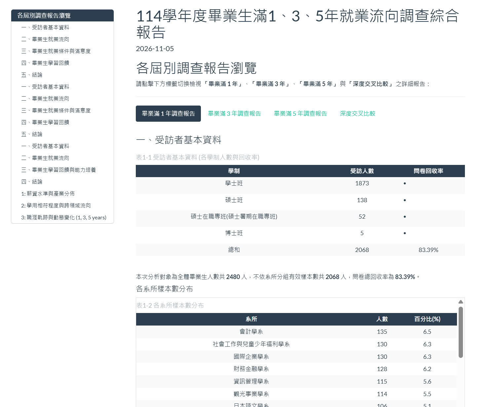
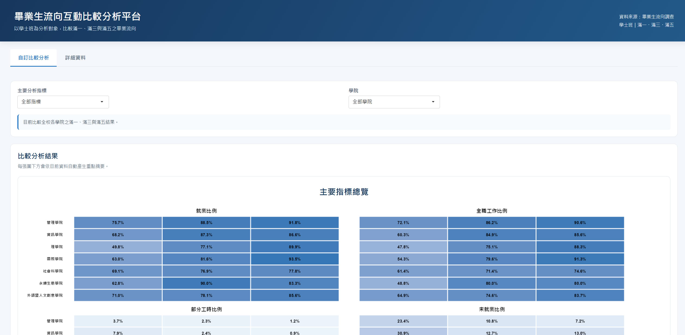

從問卷資料到視覺化成果
本專題將畢業生就業流向調查資料 整理為清楚且容易理解的統計報表， 並透過互動式網站提供不同學年度、 學院及系所之間的比較與查詢功能。 下方展示 R Markdown 與 R Shiny 兩項研究成果。
01 · 統計分析報表
R Markdown
將統計圖表、資料表格與文字說明 整合成完整的分析報表， 讓讀者依照學年度及調查主題， 逐步了解畢業生的就業情形 與在學期間的學習經驗。
報表主要呈現 目前工作狀況、職業類型、 平均月收入，以及在學期間有幫助的學習經驗等分析結果，還有進行交叉比對。 細節內容以報表為主。
報表連結
開啟完整 R Markdown 報表 ↗

02 · 互動式分析網站
R Shiny
將統計分析結果轉換為 可操作的互動式分析網站， 讓使用者自行選擇自己想觀看的比較群組 與分析指標，更直觀地觀察不同資料之間的差異。
網站以「自訂比較分析」與 「詳細資料」為主要功能， 使用者可以看到學院之間的比較，選擇學院可以看到各系之間的比較。
網站連結
開啟完整 R Shiny 網站 ↗
